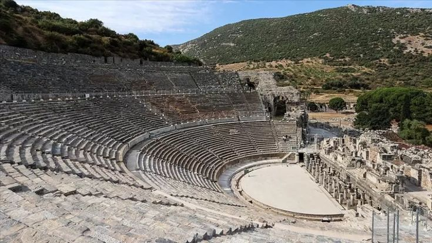

İzmir’in Selçuk ilçesinde yer alan Efes Antik Kenti, sadece Türkiye'nin değil, dünyanın en önemli antik şehirlerinden biridir. M.Ö. 6. yüzyıla kadar uzanan tarihiyle Efes, tarih boyunca Persler, Yunanlar, Romalılar ve Bizanslılar gibi birçok medeniyete ev sahipliği yapmıştır. Özellikle Roma Dönemi’nde Anadolu’nun en büyük ve en gelişmiş şehirlerinden biri haline gelmiştir.
Efes, Artemis Tapınağı gibi dünya harikası kabul edilen yapılara da ev sahipliği yapmıştır. Antik kentte ayrıca Celsus Kütüphanesi, Hadrian Tapınağı ve Yamaç Evler gibi görkemli yapılar bulunmaktadır. Tüm bu yapılar, Efes’i her yıl yüz binlerce yerli ve yabancı turistin ziyaret ettiği bir kültür ve tarih merkezi haline getirmiştir.
Efes’in en dikkat çeken yapılarından biri de Efes Antik Tiyatrosudur. Yaklaşık 25.000 kişi kapasitesiyle dönemin en büyük açık hava tiyatrolarından biri olan bu yapı, sadece tiyatro gösterileri değil, aynı zamanda gladyatör dövüşleri ve büyük halk toplantıları için de kullanılmıştır. Bugün bile zaman zaman konser ve etkinliklere ev sahipliği yapmaktadır..
Yürüyüş yolundaki mermer taşlar zamanla aşınmış ama dikkatli bakılırsa üzerinde bazı işlemeler, semboller görülebilir. Bu detaylar bile o dönemin ne kadar gelişmiş olduğunu gösteriyor.
İzmir için Efes, sadece bir tarihi miras değil; aynı zamanda şehrin kültürel zenginliğini ve geçmişten bugüne uzanan önemini yansıtan çok değerli bir simgedir. Gerek yerli halk gerekse turistler için mutlaka görülmesi gereken, geçmişin görkemiyle bugünü buluşturan eşsiz bir antik kenttir.